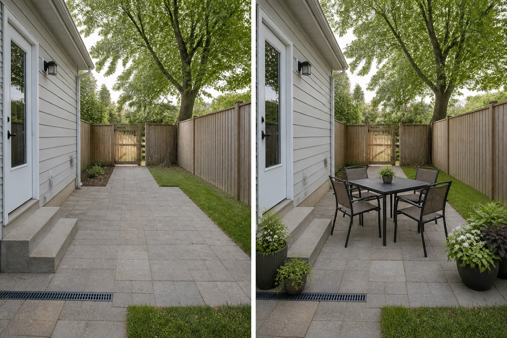

Use the existing hard surface
The table stays on the patio rather than expanding paving in the concept.
Start with the path from the kitchen or house door to the table, gate, and rest of the garden. Test the dining footprint with movable furniture in real positions before adding containers, lighting, shade, or permanent construction.
Editorially reviewed August 14, 2026.
This AI-generated comparison is visual inspiration, not a measured plan, specification, safety assessment, cost estimate, local approval, plant recommendation, or construction guarantee.

The table stays on the patio rather than expanding paving in the concept.
Furniture is arranged so the door-to-gate line remains readable even when chairs appear in use.
Grouped containers mark the dining area without creating a screen or blocking the drain.
The concept keeps the patio, house door, steps, gate, lawn, fence, tree, drain, and levels. It adds only movable furniture and containers; it does not certify clearances, surfaces, shade, lighting, fire safety, or occupancy.
Record doors, gates, paths, furniture movement, utilities, drains, roots, and maintenance access. Do not infer clearance from the image.
Note direct sun, shade, wind, overlooking, and views from inside across more than one time and season before choosing materials or plants.
Locate falls, low points, downpipes, drains, and recurring wet areas. Preserve existing outlets and seek appropriate advice before changing runoff or levels.
Check permissions, product information, plant suitability, mature size, toxicity, invasiveness, upkeep, and any safety requirements for the actual site.
Avoid sizing from a pushed-in table, blocking doors or steps, placing furniture over drains, adding heat or flame features without safety design, and assuming a surface is level or slip resistant. Stop for paving, electrical work, fixed shade, overhead structures, fire, drainage, accessibility, or boundary changes.
Favor a practical relationship to the house while checking sun, wind, views, levels, drainage, chair movement, serving route, and access.
Measure the actual furniture and test it with chairs occupied or pulled back, plus the walking and serving routes around it.
Movable furniture and containers can test orientation and atmosphere, provided they remain stable and do not obstruct access, drains, or services.
Upload a level, wide photo to compare restrained concepts before making physical changes.
AI-generated visualizations are concepts. Verify measurements, conditions, drainage, access, structure, utilities, local rules, product information, plant suitability, and professional requirements before buying or building.